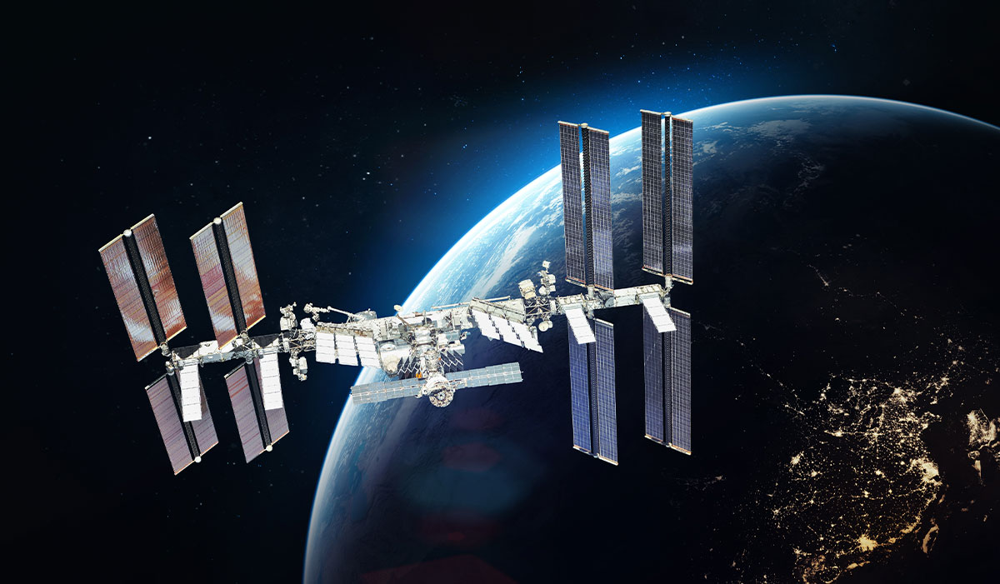

Dans Project Hail Mary, la Terre est menacée par une étrange catastrophe qui provoque une diminution importante de l'énergie solaire.
Ryland Grace se réveille seul dans un vaisseau spatial et découvre qu'il doit accomplir une mission essentielle pour sauver l'humanité.
l doit comprendre l'origine de cette menace et trouver une solution avant qu'il ne soit trop tard.
Au cours de son voyage, Ryland découvre qu’une autre civilisation est confrontée au même problème.
Il rencontre une créature extraterrestre avec laquelle il réussit progressivement à communiquer et à coopérer. Malgré leurs différences,
ils décident de travailler ensemble pour trouver une solution et permettre à leurs deux espèces de survivre.
Les grandes étapes de la mission
